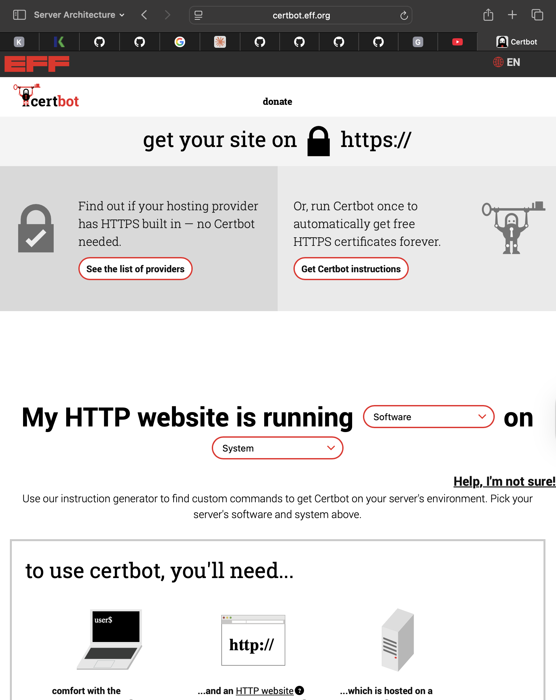

I could not complete this part either beacuse it needed the same things as the DNS lab, a public server and omain name with DNS already working.
This lab would have taught me how to get a free SSL/TLS certificate from Let's Encrypt to enable HTTPS on my website. You know how some websites show a padlock icon and say "Secure" in the address bar? That's what this certificate does.
sudo apt install certbot python3-certbot-apache
Certbot is a clever tool that automates the entire process of getting and installing certificates.
sudo certbot --apache
This single command automatically:
Encryption: Without HTTPS, everythingyou need to send to a website travels accross the internet in pain text. Anyone between you and the server can read your passwords, credit card numbers, private messages, etc. HTTPS encrypts all of it so only you and the server can read it.
Authentication: HTTPS certicates prove you're actually talking to the real google.com and not a fake server pretending to be Google. The certificate is digitally signed by a trusted organization (e.g. Let's Encrypt) that verified that domain owner's identity.
Trust: Nowadays, browsers show warnings for websites without HTTPS. Users have learned to look for that padlock icon before entering any sensitive information.
The Certbot website has clear instructions for different setups.
Even though I could not complete the practical work, I now understand why every modern website uses HTTPS. It shouldn't not optional anymore, it protects users and builds more trust.